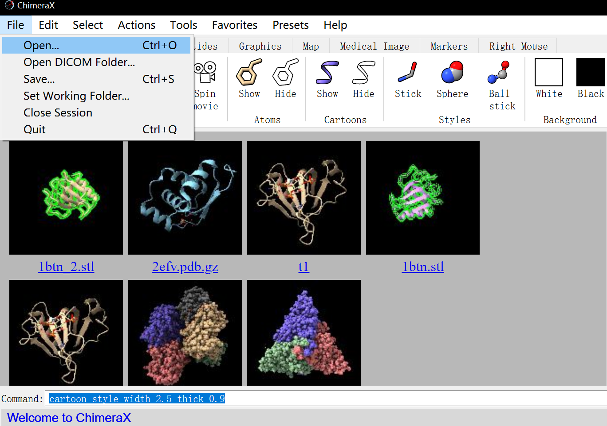
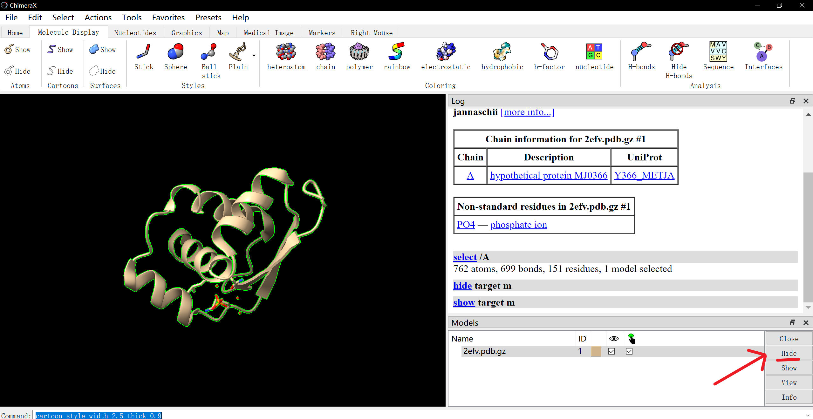
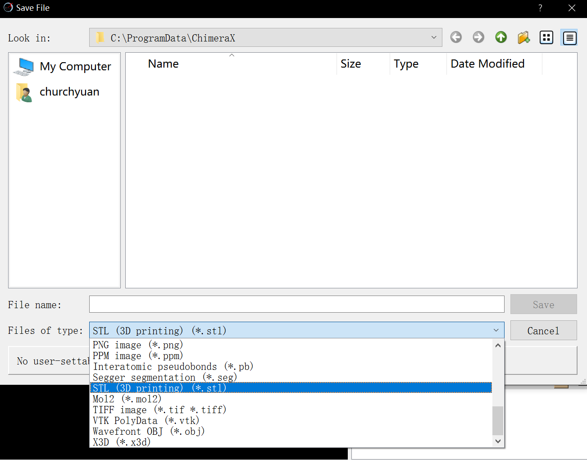

3D Print Introduction #1
How to prepare a Protein 3D model for 3D printing.

First you will need a digital model of your molecule of interest.
There are multiple options to generate a 3D printable protein model. These instructions are written for the popular software ChimeraX. You can download in UCSF ChimeraX.
-
- Find your model on the Protein Data Bank and download in PDB Format (gz).
-
- In case you haven’t yet, download and install ChimeraX (Free for private use and academic or research institutes).
-
- Start ChimeraX and open the file (File -> Open). 
-
- Often, the model will contain additional chains or ligands. To remove the extra chains, do the following:
- Select the chain you do not need (Select -> Chain), go to Actions -> Ribbon -> Hide. 
- If there are many extra chains, select the one you need (Select -> Chain), and then click on Select – Invert all models. This will select all chains besides the one you need. Then, go to Actions -> Ribbon -> Hide.
- For a ligand:
- Even if you want to print the ligand as well, we still recommend removing as described above and printing it separately. Since there is normally (logically) a gap between ligand and molecule they should ideally be printed as separate objects.
- Remove the ligand by selecting the entire chain (Select -> Chain), then go to Actions ->Atoms/Bonds -> Hide.
-
- Prepare the chain for 3D-printing: Most importantly, you need to make sure the structure is thick enough to survive printing. Optionally you can add colors to highlight features or communicate other important information.
- Thickness of the structures: In order to adjust the sizes, select the entire chain (Select -> Chain) and go to Tools -> Depiction -> Ribbon Style Editor (for older version), and for latest version Use command like
cartoon style width 2.5 thick 0.91to change the width and thick of the cartoon bonds. As a rule of thumb, the minimum thickness in smaller models should not be below 3 mm, in models with height, length or width greater than 20 cm the minimum thickness should be somewhere at least 6 mm, instructions on how to measure the wall thickness are at the end of this section. - Colors (optional): color the secondary structures by doing the following: Select -> Structure -> Secondary Structure -> Coil. Go to Actions -> Color and chose a Coil color. Repeat the same process with Helices and Sheets.
-
- Done! Now export your model for 3D printing.
- Go to File -> Export Scene. For file format use STL for non-colored 3D-printing (i.e. for FDM, SLS, or SLA 3D printing technologies) and VRML (.wrl, .vrml) for colored models.